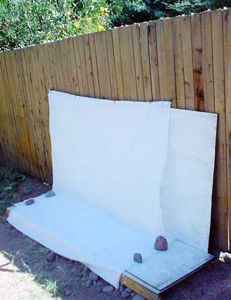
My set-up: all-natural light at around 11a.m.,
cotton fabric clothespinned to a wire (a tandem derailleur cable) on a
fence,
resting on a makeshift plywood platform painted white.
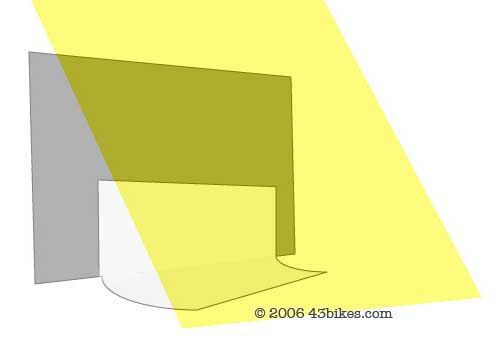
So I'm a total hack... it's true.
For my method it's important to have a bright sunny day,
and to have the light pretty much everywhere *but* on the bike. As crude
as it seems, it is a whole system - if you are going to try it this way I
think all the steps have to be taken. For example, you can't get the same
results if you move all this inside, or try it w/ direct sun (shadows and
reflections) or weak light (poor colors).
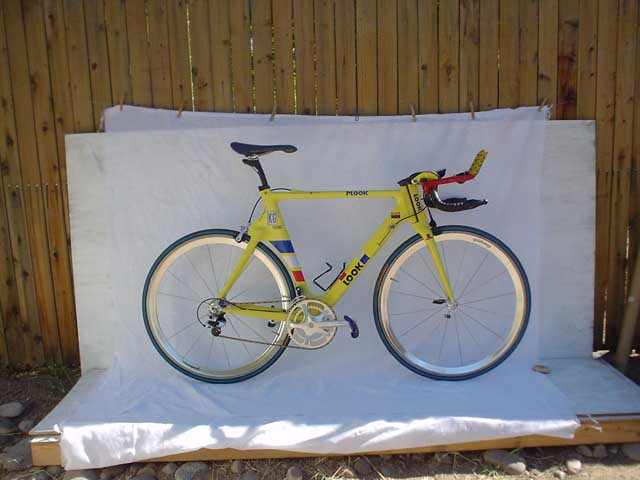
The raw image. Notice I don't use a stand for the bike.
I use a Sony DSC-U30 digital camera
that was $40 used on eBay. It's 2 megapixels and
lacks any kind of zoom or fancy lenses, and I never use a
tripod.
{kind=link}
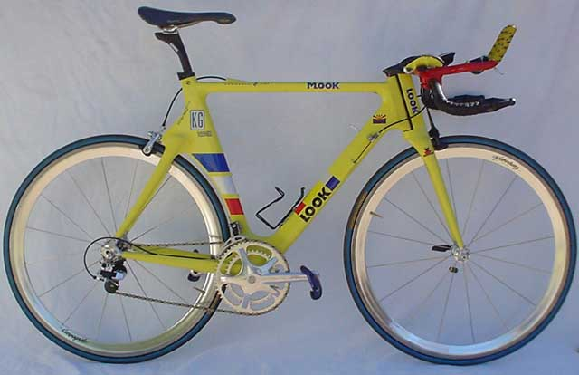
The image after getting cropped via IMAGE>CROP or
'command-C'. If you are closer to the bike than I was for this
shot, you have much more parallax, which is the
distortion along the edges of an image from the curve of the lens.
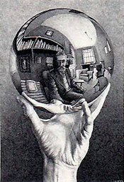 Not
necessarily a bad thing, but keep in mind that when you take pictures
that fill the frame from edge to edge, the proportions are gonna be
screwy.
Next are the steps I go through in Photoshop. I believe
that every digital image ought to be corrected *some how*, whether it's
the easy one-click options you can do w/ basic software, or in these
Photoshop steps I show you here. Why? Because digital images are usually
washed out and dingy, and lack highlights and contrast.
|
We've already cropped it, so we should only be dealing w/ the part of the image that we're going to keep. 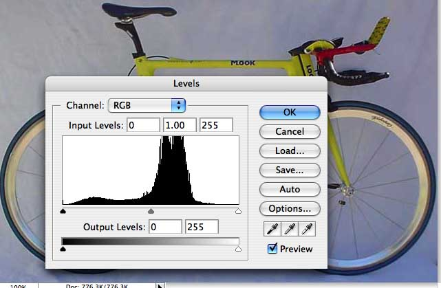 I do 'levels' next. This is IMAGE>ADJUSTMENTS> LEVELS the slow way scrolling up to the menu bar, but you should only get there that way once - your first time - and from then on do it the much faster way w/ key commands. This is 'command-L' on a Mac. It's also quicker to hit 'return' or 'enter' on your keyboard instead of mousing over to 'OK' every time. And sometimes out of haste I use the shortcut of 'auto-levels' (shift-command-L on a Mac). 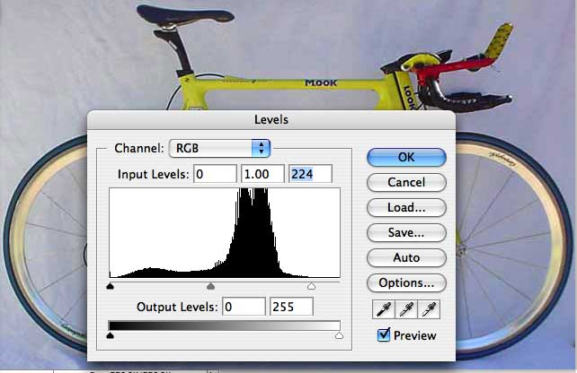 |
| 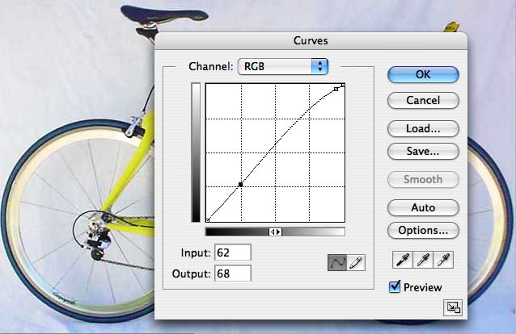 Now I do curves, which is IMAGE>ADJUSTMENTS> CURVES the slow way, or 'command-M' on a Mac. The top right edge of the line almost always needs to be raised, and you'll see those sheets get nice and white right there before your eyes. Also the lower left part of the line often needs to be lowered. Both of these actions increase the image's contrast. Every image is different though, so play around w/ it and find what looks right. |
Retouching images may be a whole artform, but it's one I try to avoid. It's so tedious to sit there pixel-wanking, and so easy to go retake the image or just move on the next one in the shoot. So hopefully we have an image here that's ready to be saved, and we're less than 15 seconds into this process. 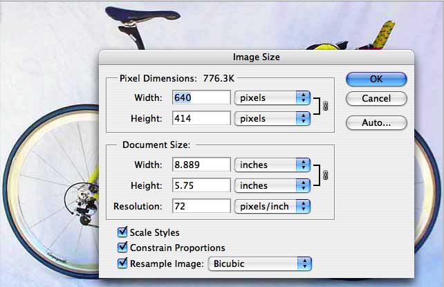 Here are more or less the numbers I shoot for when I save my images for the web. I had to custom-program a key command (shift-command-W) to save me from scrolling up to IMAGE>IMAGE SIZE everytime (see 'help' menu to get walked through customized key commands). 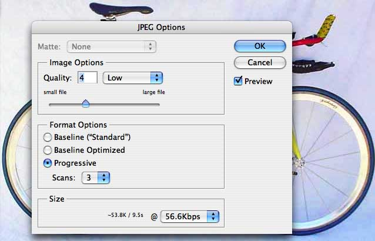 Saving images for prints is a whole other story that we won't get into here -- what I do is dump all my raw images in a separate folder in case I want the originals some day. |
|
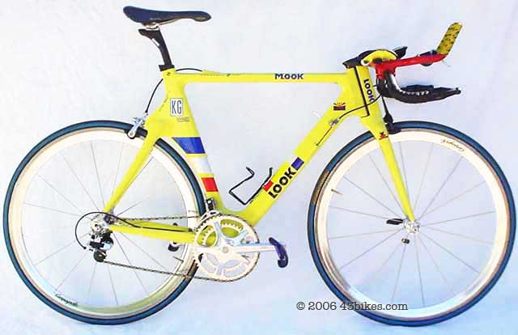 The final image, w/ less than 30 seconds of work in it. Good enough to make me want to turn off the computer and go for a ride now. Here's where I learned about watermarking my photos. I do this in big batches via FILE >AUTOMATE >BATCH > ACTIONS. Another helpful one is FILE >AUTOMATE >WEB PHOTO GALLERY which I use to make thumbnails and some of the initial steps toward making web pages. |
I'm not against the photos you get from taking your bike to the park on a sunny day. Full sun has its place, also seeking good backgrounds.
And here's a whole other do-it-yourself home bike photo page, by Ray Dobbins, pretty different from mine but highly recommended. He uses a much more legit studio. I think the advantage of his method (indoors w/ lights) is consistency and technical perfection, whereas mine have more 'surprises' - more variety in the reflections and glints of sunlight.
{kind=link}
home | Homer Simpson working at
home on his computer | 'Photoshop actually
bought' - headline seen on theOnion.com
| Homer Simpson working at
home on his computer | 'Photoshop actually
bought' - headline seen on theOnion.com